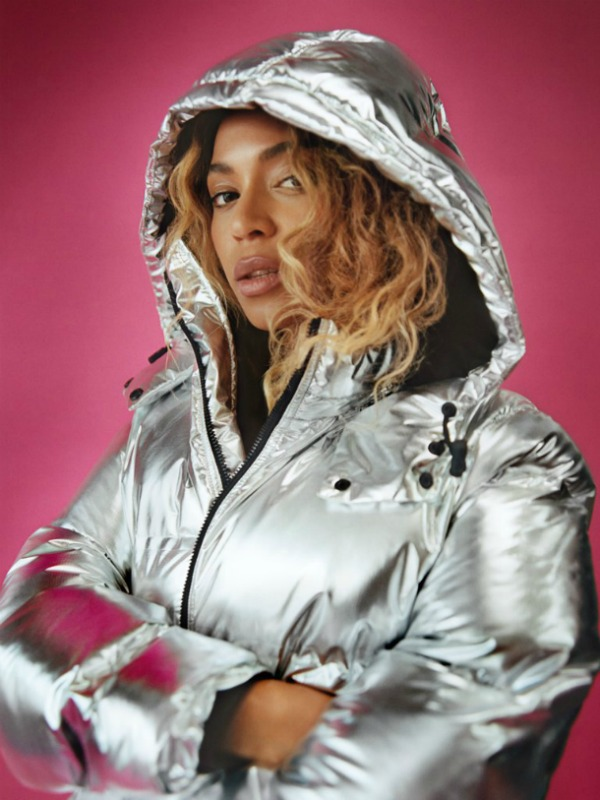

Najnovije vijesti
Manje poznate činjenice o “običnoj” prehladi
Obična prehlada je najčešća bolest uopšte, vrlo je blaga jer nije praćena povišenom temperaturom, a simptomi su hunjavica i kihanje,
začepljen nos i rijeđe bol u grlu.Običnu prehladu uzrokuju različiti respiratorni virusi, u pravilu oni slabije patogenosti, odnosno s manjom agresivnošću.
* Učestalo je vjerovanje se da su umor, hladnoća, propuh i nedovoljno sna povezani s nastankom i težinom prehlade, ali za to nema sigurnih dokaza.
* Iako se javlja tokom cijele godine, češća je zimi jer su ljudi u bliskijem fizičkom kontaktu u zatvorenim prostorijama koje se nedovoljno provjetravaju.
* Prehlada je posebno česta među malom djecom, učenicima, studentima.
* Uopšte, broj prehlada u jednoj godini smanjuje se tokom čovjekova života.
* Zbog lakog prenosa virusa, prehladu načelno nije moguće spriječiti.
* Nije dokazana efikasnost vitamina C u sprečavanju i liječenju prehlade.
Moda s Beyonce potpisom: Novi komadi iz kolekcije Ivy Park
Beyonce je još prije nekoliki mjeseci debitovala svojom novom kolekcijom odjeće koja nosi ime Ivy Park za jesen/zimu 2016/17. Boje su prave jesenje i zimske – dominira siva sa crnim i roza detaljima, koji će se sigurno svidjeti svakoj savremenoj dami koja voli da vježba i brine o svom zdravlju i figuri. Novi komadi su pufer jakna, helanke i sportski grudnjak. Nas je posebno zaintrigirala jakna koja je u srebrnoj boji i sa velikom kapuljačom, u kojoj ćete biti primijećeni gdje god da se pojavite. Topla je, pa je idealna i za hladnije dane tokom zime, kao i za kišu i snijeg. Novi komadi su pufer jakna, helanke i sportski grudnjak. Nas je posebno zaintrigirala jakna koja je u srebrnoj boji i sa velikom kapuljačom, u kojoj ćete biti primijećeni gdje god da se pojavite. Topla je, pa je idealna i za hladnije dane tokom zime, kao i za kišu i snijeg. Novi komadi su pufer jakna, helanke i sportski grudnjak. Nas je posebno zaintrigirala jakna koja je u srebrnoj boji i sa velikom kapuljačom, u kojoj ćete biti primijećeni gdje god da se pojavite. Topla je, pa je idealna i za hladnije dane tokom zime, kao i za kišu i snijeg.